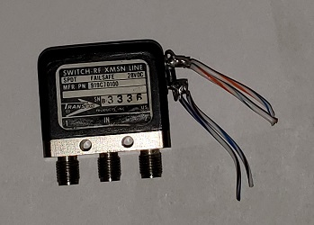

Manufacturer: Transco
Part Number: 919C70100
This is an SMA antenna switch. The configuration is single pole, double throw (SPDT) where IN and 1 are closed when no power is applied and IN and 2 are closed when power is applied. It's marked for 28V DC operation. When I tested the switch at 28V it had a current draw of 80mA. The switch operates fine with 24V DC and draws 70mA. I wouldn't go lower than that. 12V will not operate the switch. The switch does generate some heat and gets warm to the touch.
